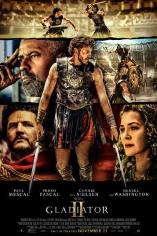

Minions & Monsters narra cómo los Minions conquistan Hollywood en 1927. Al intentar filmar una película, desatan por error monstruos reales que amenazan al planeta. Tras perderlo todo, la carismática tribu debe unirse para detener el caos y salvar al mundo.
Los mejores productos justo para ti!
Las películas que quieres ver!
Citizen Vigilante sigue a Sanders, un hombre que decide tomar la justicia por mano propia y cazar criminales. Su violenta cruzada lo convierte en una celebridad viral y héroe para el público, pero el jefe de Interpol, Henry, lo persigue al considerarlo una gran amenaza social.
Young Washington narra la juventud de George Washington. Sigue a un colono ambicioso atrapado en la selva, traiciones militares y la guerra con Francia. Sus peligrosas decisiones en el campo de batalla forjarán al legendario líder que cambiará la historia de América.

Deep Water presenta un viaje en avión que termina en catástrofe. Pasajeros internacionales viajan rumbo a Shanghái cuando sufren un aparatoso accidente. Tras un aterrizaje forzoso en el océano, deben unirse para sobrevivir a un voraz frenesí de tiburones hambrientos.

Gladiator II sigue a Lucius, quien es capturado como prisionero de guerra. Impulsado por una furia incontenible y el deseo de venganza contra el general que le quitó todo, ingresa al coliseo como gladiador. Lucius luchará con el espíritu de su padre, Maximus, para liberar a Roma.